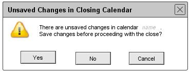
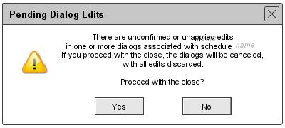

The Close command is enabled in the File Menu if a schedule is opened, disabled otherwise.
When the user selects the Close command, the system performs the following pre-close steps for the schedule to be closed, i.e., the current schedule:
Once these steps are completed satisfactorily, the system proceeds to perform the close operation. Details follow.
For the first pre-close step, the system checks if the current calendar has any unsaved changes. If there are one or more unsaved changes, the system displays the dialog shown in Figure 112.

Figure 112: Offer to save schedule before closing
The name string is the name of the current schedule project to be closed. If the user presses Yes, the system proceeds as follows:
If the user presses No in the Offer to save schedule dialog, the system proceeds to the next pre-close step without saving the schedule, thereby losing any unsaved changes. If the user presses Cancel in the Offer to save schedule dialog, the system cancels the close operation entirely, without saving, without performing further pre-close steps, and leaving the schedule open and unchanged. The system also removes both the offer-to-save and file-close dialogs from the screen.
If the schedule to be closed has no unsaved changes, the system proceeds to the next pre-close step, without displaying the Offer to save schedule dialog. Schedulers with no unsaved changes are those that have been saved prior to close, as well as other-user and group schedulers, since the latter two types of scheduler cannot be changed.
For the second pre-close step, the system checks if there are any pending edits for the schedule to be closed. A pending edit is any unconfirmed or unapplied change the user has made in one or more of these dialogs. if there any such pending edits, the system displays the dialog shown in Figure 113.

Figure 113: Warning when there are unconfirmed or unapplied dialog edits.
If the user answers Yes in the pending-edits dialog, the system discards any pending edits, cancels all pending dialogs, and removes the dialogs from the screen. When the system responds to the Yes response or if the pending-edits dialog was not displayed, the system proceeds to the last pre-close step.
If the user answers No in the pending-edits dialog, the system cancels the close operation without performing the last pre-close step, leaves the schedule open, and leaves all pending edit dialogs open and unchanged. If the schedule had been saved as a result of the first pre-close step, it remains saved, i.e., the save operation is not undone.
When the pre-close steps have been completed without a cancellation, the system completes the close operation by closing the schedule.When the close operation has been completed or canceled, the system removes all close-related dialogs from the screen.
Closing a schedule does not automatically exit the Scheduler Tool. The Scheduler Tool runs with zero schedule file open.